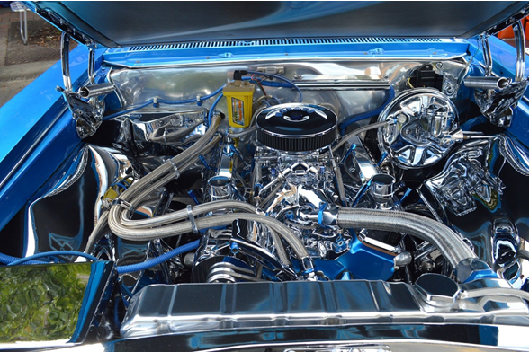
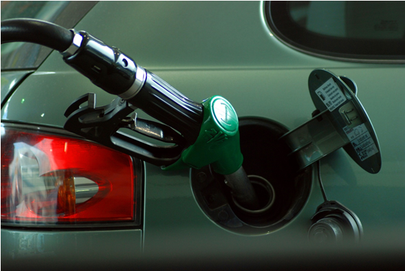
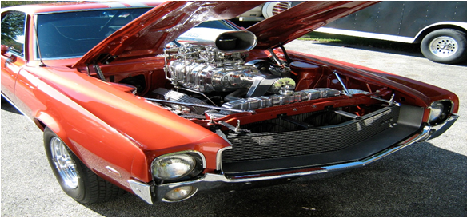
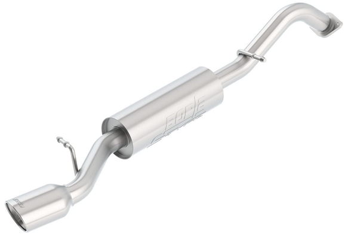
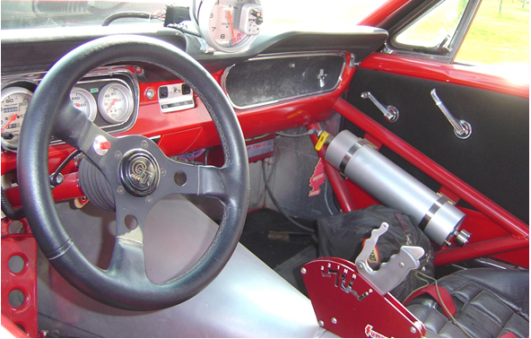

En algún momento, cualquiera que alguna vez se haya sentado al volante de un automóvil ha tenido la idea. ¿Cómo puedo hacer que esta lata de sardinas corras más rápido? Cuando las películas de Rápido y Furioso aparecieron, nació una cultura completamente nueva en torno al tema. Pero, ¿y si tienes un presupuesto limitado? No te preocupes, todavía hay esperanza. En este artículo revelaremos diez formas en las que puedes hacer que tu carro vaya más rápido, independientemente de tu presupuesto.
¿Qué hace que un automóvil vaya rápido?
Antes de hablar sobre cómo hacer que tu carro vaya más rápido, es importante comprender qué hace que un automóvil vaya más rápido.
Un automóvil es una complicada mezcla de componentes. Cualquiera de esos componentes generalmente se puede actualizar o modificar para aumentar la velocidad.
Sin embargo, los factores más comunes para determinar la velocidad de un vehículo son el aire y el combustible. Por lo tanto, obtendrá ganancias de velocidad más notables al actualizar las piezas que involucran aire y combustible.
La combustión está en el corazón de "ir rápido" y es importante comprender cómo funciona la combustión.
Para que ocurra la combustión, necesitas una mezcla de aire, combustible y chispa. La chispa se produce a través de bujías. El combustible se entrega a al motor desde el tanque de gasolina por medio de una bomba de combustible. La bomba mueve el combustible a un carburador (en automóviles más antiguos) o un sistema de inyección de combustible (en vehículos más nuevos).
El aire llega a través de una entrada. Partes adicionales como turbocompresores, sobrealimentadores, tomas de aire y más pueden aumentar la cantidad de aire que llega. Discutiremos cada uno de estos en su momento. El punto es que, si aumenta la cantidad de combustible y / o aire, se verá un aumento en la potencia.
Sin embargo, la combustión no es lo único que puede hacer que tu vehículo vaya más rápido. También es importante considerar cómo se transfiere todo ese poder al suelo. Ahí es donde entra la tracción, y también discutiremos algunas actualizaciones en esa área.
Es importante recordar que cuanto más rápido va tu vehículo, más peligroso es. Por lo tanto, también debe trabajar para mejorar sus habilidades de conducción a medida que mejora el rendimiento de tu automóvil.
10 formas de hacer que tu carro corra más rápido
Mantenimiento regular
Una de las cosas más fáciles y obvias que se pueden hacer para conducir más rápido es asegurarte de que tu vehículo esté en plena forma. Un vehículo descuidado es un vehículo lento.
Las bujías pueden dañarse y ensuciarse con el tiempo. Debes revisarlos periódicamente para asegurarse de que estén en buen estado y que el "espacio" sea apropiado para su vehículo. Cambiar las bujías es una forma económica de aumentar la potencia de su vehículo.
Sin embargo, esto solo aplica si sus bujías actuales son de mala calidad. Es un error común pensar que las "bujías de alto rendimiento" harán que su automóvil vaya más rápido. Eso realmente solo aplica si también está actualizando otro componente en su vehículo, como aire o combustible.
El aceite viejo es otro ladrón de energía. Cuando el aceite envejece, se vuelve fangoso y hace que el motor trabaje más. Eso hará que tu automóvil sea más lento, no más rápido. Por lo tanto, asegúrese de realizar cambios de aceite regulares. Eso también se aplica a su filtro de aceite.
Recuerda, la entrada de aire es un componente importante del aumento de velocidad. Por lo tanto, también debe cambiar regularmente el filtro de aire de su vehículo. Esta es un área donde algunas actualizaciones de productos pueden agregar una buena cantidad de energía, por lo que entraremos en más detalles en breve.
Mejoras de neumáticos
Mucha gente no se da cuenta de que cambiar sus neumáticos puede hacer que su automóvil sea más rápido. Los neumáticos de calle normales están diseñados para repeler el agua y mantener su automóvil seguro en la carretera.
Los neumáticos especiales, como los slicks de carreras, están diseñados para algo completamente diferente. Están destinados a ofrecer la máxima tracción y, a su vez, la máxima aceleración.
Sin embargo, tenga en cuenta que la mayoría de los slicks de carreras verdaderos no son legales en la calle. Por lo tanto, están bien para la pista, pero es probable que no los conduzca todos los días.
La buena noticia es que hay muchos “puntos medios” cuando se trata de neumáticos de carreras. Puede encontrar neumáticos que sean legales para la calle y diseñados para aumentar el potencial de velocidad de su automóvil.
Reducir peso
Si realmente quieres aumentar la velocidad de tu vehículo, podrías considerar quitar algo de peso. Esto es especialmente cierto en las aplicaciones de carreras de resistencia.
Te sorprenderás de lo rápido que será tu automóvil si te deshaces de los asientos traseros, la llanta de repuesto e incluso las alfombras. Obviamente, esto no es práctico cuando se trata de un conductor que es padre con una esposa y tres hijos.
Pero si tienes un auto de pista dedicado, es una excelente manera de aumentar la velocidad sin gastar un centavo.
Toma de aire frío
Recuerde, el aire es un componente vital de la combustión del motor. Pero aumentar la velocidad de su automóvil es un poco más complicado que simplemente obtener "más aire".
Necesitas aire frío para aumentar la velocidad de manera efectiva. Ahí es donde entra una entrada de aire frío. El aire frío es más denso que el aire caliente (que es lo que la mayoría de los vehículos utilizan para la combustión). A su vez, se puede forzar más aire condensado en un motor, lo que ayudará a que el combustible se queme de manera más eficiente. ¿El resultado? Más caballos de fuerza.
Agregar una entrada de aire frío es una de las formas más fáciles de aumentar la velocidad de tu vehículo.
Si deseas aumentar la velocidad de tu vehículo con un mínimo de esfuerzo, un chip de rendimiento es el boleto.
La mayoría de los vehículos modernos ya vienen con chips diseñados para controlar el desempeño de un automóvil. Estos chips regulan la proporción de aire y combustible en su admisión, así como también cómo funcionan sus frenos y otros sistemas. Puedes comprar chips de rendimiento del mercado de accesorios para cambiar esas relaciones y funciones.
Actualizaciones del sistema de combustible
El combustible es otro miembro de la santa trinidad de la velocidad. Ya hemos hablado de cómo aumentar el aire frío puede aumentar la potencia. Lo mismo se puede decir sobre el aumento de la cantidad de combustible en el colector de admisión.
Una forma de hacer esto es instalar una bomba de combustible de mayor proporción. Esto asegurará que la parte comercial de tu vehículo obtenga más combustible. Esta actualización suele ir acompañada de la instalación de filtros de combustible de mayor flujo y líneas de gas más grandes. Sin embargo, tendrá que hacer algo con todo ese combustible una vez que llegue a su motor.
En vehículos más antiguos, esto generalmente significa una actualización del carburador. Los carburadores se miden en pies cúbicos por minuto (CFM). Cuanto más alta sea la clasificación CFM, más combustible puede introducir un carburador en su motor.
Elegir el carbohidrato correcto es un arte. Una clasificación CFM demasiado baja y su motor se “morirá de hambre”. Una calificación demasiado alta y será propenso a inundaciones, fracasos y todo tipo de problemas.
Sin embargo, debe saber que las actualizaciones del sistema de combustible no son baratas. Estamos empezando a entrar en algunas partes importantes del rendimiento aquí, y eso significa mucho dinero.
Turbocompresores
Ya deberías comprender los conceptos básicos de la velocidad. Aumente el aire y / o el combustible y aumentará la potencia.
Otra forma popular de aumentar el flujo de aire a su motor es instalar un turbocompresor. Los turbos usan el escape del motor para hacer girar una turbina. Esta turbina comprime el aire limpio y lo reintroduce en los cilindros del motor. Ese aumento de aire limpio significa una combustión más potente. En resumen, más velocidad.
Cuando se trata de turbocompresores, encontrará una gran cantidad de empresas que satisfagan sus necesidades.
Sobrealimentadores
Al igual que los turbocompresores, los supercargadores fuerzan el aire comprimido hacia el motor para aumentar la potencia. Pero a diferencia de los turbocompresores, un supercargador no usa el escape del motor para impulsarlo. En cambio, un sobrealimentador se gira mecánicamente mediante una polea unida al frente.
Los supercargadores tienden a producir más potencia que un turbocompresor, pero también requieren más trabajo. Es probable que requieran otras actualizaciones del motor y, en algunos casos, es posible que deba hacer un agujero en el capó.
Actualizaciones de escape
Actualizar su sistema de escape también puede aumentar la velocidad de su vehículo. Cuanto más eficientemente pueda deshacerse del escape, más rápido será su vehículo. Por lo general, eso significa instalar un verdadero sistema de "escape dual".
Muchos vehículos modernos cuentan con escape doble, pero generalmente suele ser una elección estética, no una mejora de rendimiento. Estos sistemas todavía pasan por un convertidor catalítico, que puede matar la energía.
Sin embargo, modificar el escape de tu automóvil también puede cambiar sus emisiones, y eso no siempre es legal.
Por lo tanto, asegúrate de verificar las leyes del lugar donde vive antes de cortar y cortar en cubitos su automóvil. Eso es especialmente importante si planea seguir conduciendo tu automóvil en las calles.
Sistema de óxido nitroso
Bien, para los fanáticos de Rápido y Furioso, esto es lo que estaban esperando. Un sistema NOS (óxido de nitrógeno) es uno de los métodos más populares para aumentar la velocidad de tu vehículo.
Un sistema NOS funciona inyectando pequeñas ráfagas de nitrógeno en su motor. Este nitrógeno, a su vez, aumenta la cantidad de oxígeno presente para la combustión. Eso significa que su motor puede quemar más combustible. Y, como hemos establecido, más combustible significa más potencia.
Es importante saber que la implementación efectiva de un sistema NOS requiere algunos ajustes. Demasiado o muy poco gas y tus esfuerzos serán en vano. Es por eso que le sugerimos que ajuste su sistema con un experto en rendimiento con experiencia.
Ahí están. Diez formas de hacer que tu automóvil corra más rápido, independientemente de tu presupuesto. Solo recuerda que, a medida que aumenta la velocidad de su vehículo, también lo hace la habilidad necesaria para manejarlo.
Por lo tanto, ten cuidado al realizar cualquiera de las actualizaciones mencionadas anteriormente. Mantente dentro de la legalidad y, en caso de duda, busca información profesional.